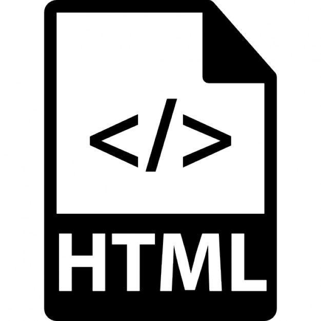
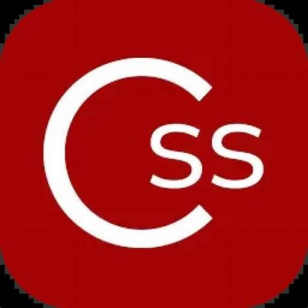

Langage HTML (HyperText Markup Language) ? est étroitement liée à l'évolution
d'Internet
et du World Wide Web. Voici une version rédigée de son histoire :
Les Origines de l'HTML
HTML a été créé au début des années 1990 par Tim Berners-Lee, un scientifique britannique
travaillant au
CERN (Conseil Européen pour la Recherche Nucléaire) à Genève, en Suisse. À l'époque, Berners-Lee
cherchait un moyen de partager facilement des documents entre les chercheurs dispersés dans le monde
entier.
La Première Version
En 1991, Tim Berners-Lee a publié la première version de HTML, qui comprenait 18 éléments.
Cette version initiale était simple mais suffisamment puissante pour permettre la création de
documents
hypertextes avec des liens vers d'autres documents.
HTML 2.0 et la Standardisation
Avec la popularisation du Web, il est devenu nécessaire de standardiser le langage HTML
pourcom
assurer la compatibilité entre les différents navigateurs. En 1995, la spécification HTML 2.0 a été
publiée par l'Internet Engineering Task Force (IETF), formalisant ainsi de nombreuses
fonctionnalités
présentes dans les premières versions non standardisées.
L'Évolution vers HTML 3.2 et 4.01
HTML 3.2, publié en 1997, a introduit des fonctionnalités supplémentaires comme les
tableaux,
les applets Java, et les feuilles de style. HTML 4.01, publié en 1999, a apporté des améliorations
significatives en matière de structuration du contenu et de séparation du contenu et de la
présentation,
notamment grâce à l'utilisation de CSS (Cascading Style Sheets).
L'Impact des Technologies Dynamiques
L'introduction de JavaScript a permis de rendre les pages Web interactives, marquant le
début
des technologies Web dynamiques. Les DHTML (Dynamic HTML) ont ajouté des capacités interactives aux
pages Web statiques en utilisant une combinaison de HTML, CSS et JavaScript.
HTML5 et les Avancées Modernes
En 2008, le W3C (World Wide Web Consortium) a commencé à travailler sur HTML5, une
révision
majeure visant à répondre aux besoins des applications Web modernes. HTML5 a été officiellement
publié
en octobre 2014. Cette version a introduit de nouvelles balises sémantiques (comme article, section,
et
nav), des API pour des fonctions complexes (comme le dessin 2D et 3D avec canvas, le stockage local
et
la gestion des médias), et a éliminé la dépendance à des plugins externes pour des fonctionnalités
multimédia.
L'Avenir de l'HTML
HTML continue d'évoluer pour s'adapter aux besoins changeants du Web. Le W3C et le WHATWG
(Web
Hypertext Application Technology Working Group) travaillent ensemble pour maintenir et développer de
nouvelles fonctionnalités pour HTML. Avec l'essor des technologies comme les Progressive Web Apps
(PWA)
et le WebAssembly, HTML reste un pilier central du développement Web.
Conclusion
Depuis sa création, HTML a profondément transformé la manière dont l'information est
partagée
et consommée sur Internet. Il continue d'évoluer, intégrant de nouvelles fonctionnalités et
s'adaptant
aux besoins des utilisateurs et des développeurs pour rester pertinent dans un paysage technologique
en
perpétuelle évolution.
Si voulez-vous savoir à quoi ça ressemble le code cliquez - ici

Langage CSS (Cascading Style Sheets) ? est une partie intégrante de l'évolution du
développement web, permettant de séparer la présentation du contenu et de créer des interfaces
utilisateur plus flexibles et attrayantes.:
Les Origines de CSS
Dans les années 1990, le développement web était dominé par HTML, qui était principalement
utilisé pour structurer le contenu des pages web. Cependant, HTML ne permettait pas de contrôler
efficacement la présentation et le style des documents. C'est dans ce contexte que Håkon Wium Lie,
alors
travaillant pour le CERN et plus tard pour le W3C (World Wide Web Consortium), a proposé le concept
de
CSS en octobre 1994.
La Première Version de CSS
En décembre 1996, le W3C a publié la première recommandation officielle de CSS, connue
sous le
nom de CSS1. Cette première version permettait de définir des styles de texte, des marges, des
bordures,
des couleurs, et des arrière-plans pour les éléments HTML. CSS1 a introduit le concept de cascade,
permettant de combiner plusieurs feuilles de style et de gérer les priorités de style.
CSS2 et les Améliorations
CSS2 a été publié en mai 1998. Cette version a apporté des améliorations significatives, y
compris le positionnement absolu, relatif et fixe des éléments, les z-index pour la gestion de la
superposition d'éléments, et les styles pour différents types de médias (comme les impressions et
les
écrans). CSS2 a également introduit les pseudo-classes et les pseudo-éléments, permettant des
sélections
et des styles plus sophistiqués.
L'Émergence de CSS3
Avec l'essor du web dynamique et des besoins croissants en termes de design et
d'interactivité, le développement de CSS3 a commencé au début des années 2000. Contrairement aux
versions précédentes, CSS3 a été modulé en plusieurs documents appelés "modules", chacun traitant
'un
aspect spécifique des styles et des mises en page. Les premiers modules de CSS3 ont été publiés en
1999,
mais c'est au cours des années 2010 que CSS3 est devenu largement supporté par les navigateurs. CSS3
a
introduit de nombreuses nouvelles fonctionnalités, y compris les transitions, les animations, les
transformations 2D et 3D, les ombres portées, les bordures arrondies, les dégradés, et bien plus
encore.
L'Impact des Préprocesseurs CSS
Les préprocesseurs CSS comme Sass (Syntactically Awesome Stylesheets) et Less ont gagné en
popularité dans les années 2010. Ces outils ont permis aux développeurs de gérer des feuilles de
style
plus complexes en offrant des fonctionnalités avancées comme les variables, les mixins, les
fonctions,
et les opérations mathématiques, qui ne sont pas nativement disponibles en CSS.
L'Évolution Continue et les Futures Directions
Le développement de CSS ne s'est pas arrêté avec CSS3. Le W3C et d'autres groupes de
travail
continuent de développer et d'améliorer le langage, introduisant de nouvelles fonctionnalités et
améliorations. Des concepts comme CSS Grid, Flexbox, et les Custom Properties (variables CSS) ont
radicalement transformé la manière dont les mises en page sont créées et gérées. L'initiative CSS4,
bien
que non officielle en tant que version distincte, continue de pousser les limites en apportant des
améliorations incrémentales et des nouvelles fonctionnalités au langage.
Conclusion
CSS a parcouru un long chemin depuis sa création, transformant le développement web et
permettant des conceptions de sites web plus riches et plus sophistiquées. En séparant la
présentation
du contenu, CSS a permis aux développeurs et aux designers de collaborer plus efficacement et de
créer
des expériences utilisateur plus engageantes. Aujourd'hui, CSS reste un élément fondamental du
développement web moderne, évoluant constamment pour répondre aux besoins changeants des
utilisateurs et
des développeurs.
Si voulez-vous savoir à quoi ça ressemble le code cliquez - ici
Langage JavaScript (JS) ? est riche et complexe, influençant considérablement le
développement web et les technologies de l’internet moderne. :
Les Origines de JavaScript
JavaScript a été créé en 1995 par Brendan Eich, alors ingénieur chez Netscape
Communications. À
cette époque, Netscape cherchait à ajouter des fonctionnalités dynamiques et interactives à ses
pages
web. Brendan Eich a développé JavaScript en seulement dix jours, initialement sous le nom de
"Mocha",
qui a ensuite été changé en "LiveScript" et finalement en "JavaScript" pour capitaliser sur la
popularité du langage de programmation Java, bien que les deux langages soient fondamentalement
différents.
Les Premières Versions et l'Adoption Initiale
La première version de JavaScript a été intégrée dans Netscape Navigator 2.0 en 1995. Bien
que
limité dans ses fonctionnalités, JavaScript permettait déjà d’ajouter des interactions simples et
des
validations de formulaires, ce qui était révolutionnaire pour l’époque. Peu de temps après,
Microsoft a
introduit une version similaire appelée JScript dans Internet Explorer 3.0 en 1996, ce qui a conduit
à
une fragmentation et à des problèmes de compatibilité entre les navigateurs.
La Standardisation avec ECMAScript
Pour résoudre les problèmes de compatibilité, Netscape a soumis JavaScript à l’ECMA
International (European Computer Manufacturers Association) pour standardisation. En 1997, la
première
édition de la spécification ECMAScript (ES1) a été publiée. ECMAScript est devenu le standard
officiel
du langage JavaScript, et les versions ultérieures (ES2 en 1998 et ES3 en 1999) ont introduit de
nouvelles fonctionnalités et améliorations.
La Période de Stagnation et la Renaissance avec ES5
Au début des années 2000, le développement de JavaScript a stagné, avec peu de nouvelles
fonctionnalités introduites. Cependant, l’essor des applications web et des technologies AJAX
(Asynchronous JavaScript and XML) a relancé l’intérêt pour JavaScript. En 2009, la cinquième édition
d’ECMAScript (ES5) a été publiée, apportant des améliorations significatives telles que les méthodes
natives pour manipuler les objets, les tableaux, et les chaînes de caractères, ainsi que le mode
strict
pour une meilleure gestion des erreurs.
L'Avènement d'ECMAScript 6 (ES6)
ECMAScript 6, également connu sous le nom d'ECMAScript 2015 (ES2015), a été une mise à jour majeure
publiée en 2015. ES6 a introduit de nombreuses fonctionnalités nouvelles, y compris les classes, les
modules, les promesses, les let et const pour la déclaration de variables, les fonctions fléchées,
et
les générateurs. ES6 a radicalement transformé le développement JavaScript, le rendant plus puissant
et
plus moderne.
L'Évolution Continue et ESNext
Depuis ES6, de nouvelles versions d’ECMAScript sont publiées chaque année, apportant des
améliorations incrémentales et des nouvelles fonctionnalités. ES7 (2016) a introduit l’opérateur
d’exponentiation et les méthodes d’array includes, tandis qu’ES8 (2017) a ajouté les fonctions
asynchrones et les objets de type Async/Await. Ces mises à jour annuelles, connues collectivement
sous
le nom d’ESNext, permettent à JavaScript de rester à la pointe de l’innovation en matière de
développement web.
L'Écosystème JavaScript et les Cadres Modernes
Parallèlement à l’évolution du langage, l’écosystème JavaScript a vu l’émergence de nombreux
frameworks et bibliothèques qui ont transformé le développement web. Des bibliothèques comme jQuery
ont
simplifié les manipulations DOM et les requêtes AJAX, tandis que des frameworks comme AngularJS,
React,
et Vue.js ont permis de créer des applications web complexes et dynamiques avec une architecture
basée
sur les composants.
Conclusion
JavaScript a parcouru un long chemin depuis ses débuts modestes en 1995. De simple langage
de
script pour les interactions de base, il est devenu une technologie essentielle pour le
développement
web moderne, permettant de créer des applications web riches et interactives. Grâce à la
standardisation
continue et à l’évolution rapide de ses fonctionnalités, JavaScript continue de jouer un rôle
central
dans l’innovation technologique et le développement de l’internet.
Si voulez-vous savoir à quoi ça ressemble le code cliquez - ici